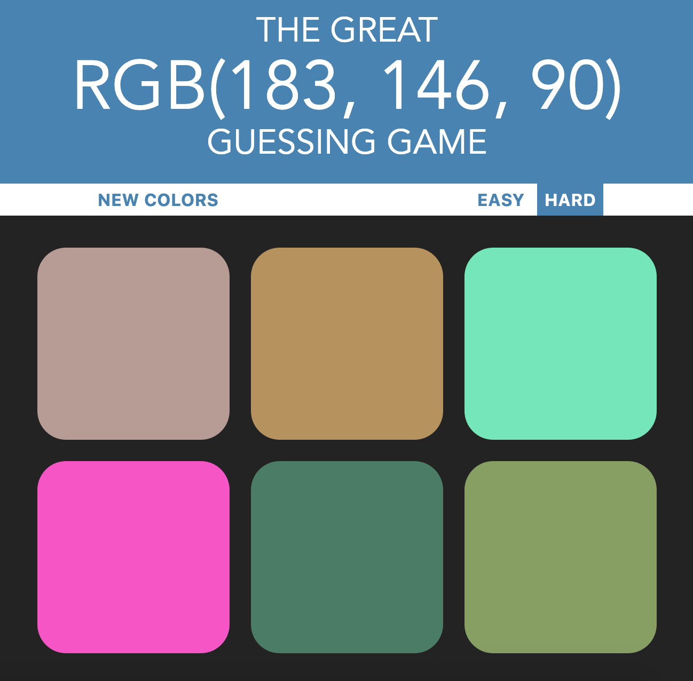
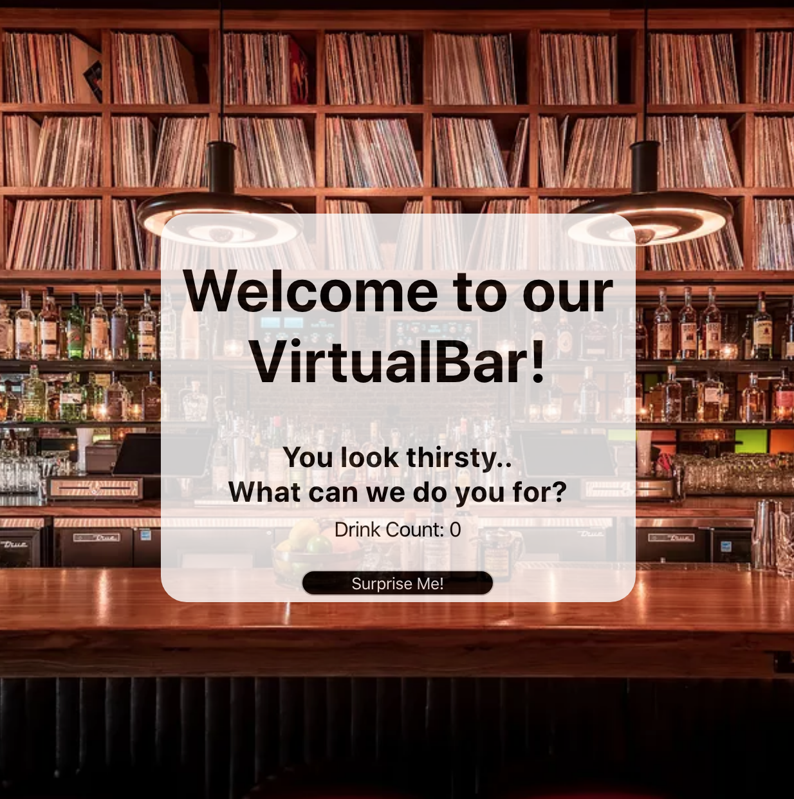
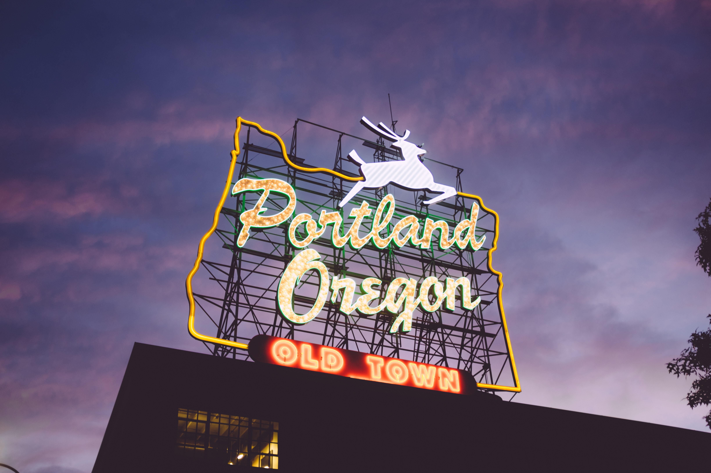

Intro
My name is Justin Russell. I am a 25 year old Web Development student at Lambda School. I graduated
with a Bachelor's Degree in Business Marketing from San Jose State University back in 2017.
I have spent most of my life living all up and down California, with a short 1 year stint in Hawaii
before finding a new home in Portland, Oregon.
When I'm not working or watching sports, you can find me on the golf course with a cold beer in my
hand and my golf bag over my shoulder.
I am a former collegiate baseball player and have only recently fallen in love with coding and the
process behind Web Development. By the way, check out my awesome work.
I found Lambda after running into the CEO and Founder's twitter page and loved their mission and
growth. I couldn't be more certain that this is the school for me.
Work

This project uses mainly HTML, CSS, and JavaScript. A random RGB color code is generated, along with 6 different colors. The user is supposed to guess what color the RGB code represents.

This Virtual Bar was built using Create-React-App and multiple react components. It is hooked up to a free backend API that will provide the user with a random drink that's the "Bartender's Choice" and display the drink as well as a picture and its main base alcohol. This module explores asynchronous action creators in Redux.
About
Justin Anthony Russell
25 years old
Portland, OR
Web Developer

I am currently a Web Development student attending the online Lambda School. When I'm away from my
computer you can find me watching sports or out playing golf.
I love anything that has to do with the Lakers and Yankees, and will watch any form of NFL football
regardless of who is playing.
At night I like to go out to see movies, watch a comedy show, or go enjoy some of the great food
that Portland has to offer.
Growing up in California, my life was centered around all things sports, especially baseball.
After being cut from my collegiate team as a Junior, I struggled to find my place in society as
something other than an athlete.
I picked up golf as a hobby and that has consumed most of my free time that had opened up once
baseball was over. It wasn't until
a few years after I graduated with a Bachelor's Degree in Marketing from SJSU that I discovered
coding and all of the challenges that came with it.
My competitive spirit helps drive me to become a better Web Developer every day and help others
around me do the same.
Growing up, I was never into video games or computers. It wasn't until I matured that I found the
beauty in Web Development. The concept of adding these skills to my business/team oriented mindset
seemed like a no brainer moving forward in my life and career and I am as eager as ever to embrace
this journey.
Contact